This summary highlights the key discussions from the lecture video, with visual frames captured at important moments.
Video: https://www.youtube.com/watch?v=msHyYioAyNE
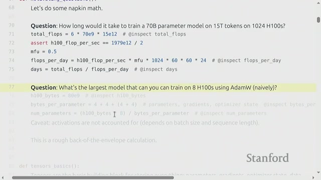
This section introduces the goals of building language models from scratch using PyTorch. It emphasizes the importance of mastering PyTorch basics such as tensors, models, optimizers, and training loops. A strong focus is placed on resource efficiency, including both memory and computational considerations.
Training large models requires careful planning and understanding of the resources involved. The instructor motivates learners with example calculations that estimate training time and resources needed for large models. This approach teaches how to perform quick, rough calculations—often called napkin math—which are essential for planning effective training experiments.
Tensors are the fundamental data structures in PyTorch used to store data, parameters, gradients, and more. They are essentially multi-dimensional arrays that hold numerical values, primarily floating-point numbers, in memory.
The choice of floating-point format directly affects both memory usage and computational speed. Here are the key formats used in deep learning:
Understanding these concepts is crucial for optimizing deep learning workflows in PyTorch, ensuring a balance between performance and stability.
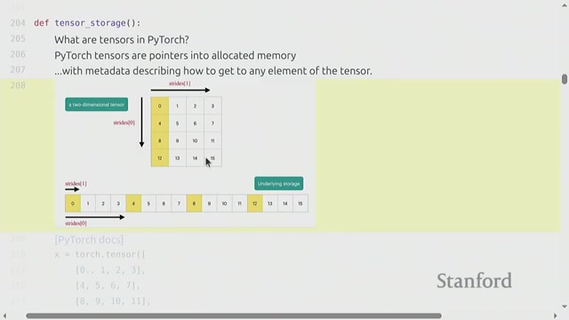
In PyTorch, tensors can be stored either on the CPU or the GPU. This distinction is crucial because it directly impacts the speed of computations and the efficiency of data movement.
At their core, tensors are pointers to memory locations that hold data, along with metadata such as their shape and strides. Understanding this helps explain how certain operations behave under the hood.
A key concept in tensor memory layout is whether a tensor is contiguous or non-contiguous:
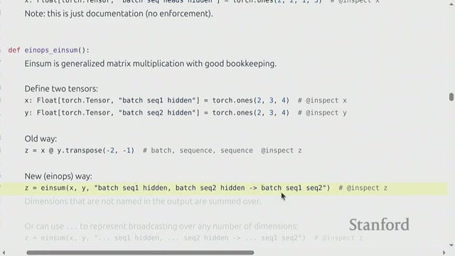
Matrix multiplication is a fundamental operation in deep learning models, especially in language models. It involves multiplying two matrices to produce a third matrix by combining the rows of one matrix with the columns of the other.
In modern deep learning workflows, computations are often performed on batches of data and sequences simultaneously. A batch refers to a group of examples processed together to accelerate training, while a sequence represents ordered data points, such as words in a sentence.
To simplify and clarify tensor operations, Einstein summation (einsum) notation is used. Instead of relying on confusing negative indices, einsum names tensor dimensions explicitly, making complex operations easier to read and less prone to errors.
... notation.-1, -2) in PyTorch is common, it can be confusing and hard to maintain.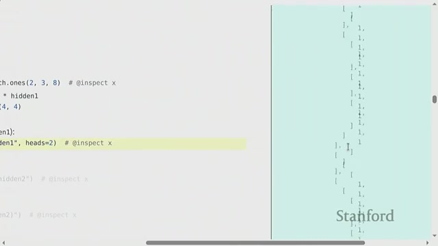
In many advanced models, such as transformers, tensor dimensions often represent multiple combined concepts. For example, a single dimension might encode both attention heads and hidden sizes. To work effectively with these tensors, it's essential to know how to split (unpack) these combined dimensions, perform operations on them, and then flatten (pack) them back together.
The rearrange function is a powerful and flexible tool that allows you to change the shape of a tensor by splitting or combining dimensions without copying data. This makes it more general and readable compared to basic view or reshape functions.
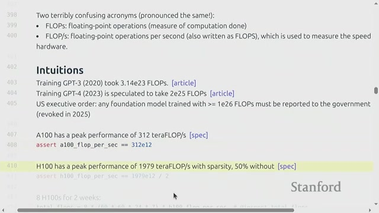
Floating point operations (flops) refer to basic mathematical calculations such as additions and multiplications involving floating point numbers. These operations are fundamental in computing, especially in training and running large machine learning models.
Counting the number of flops helps estimate the computational effort required to train or run a model. For example, large models can require billions or trillions of flops, which directly impacts training time and hardware needs.
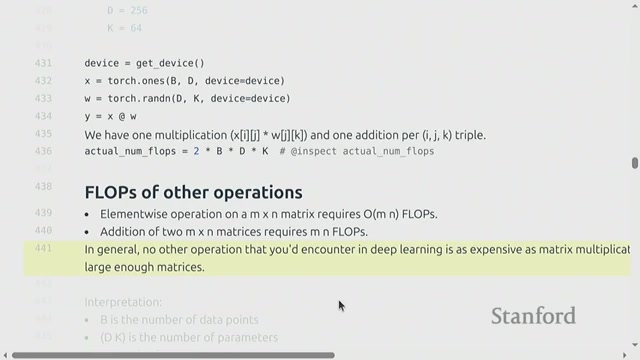
This section introduces a basic linear model example and explains how to count the floating point operations (flops) involved in matrix multiplication. Understanding these concepts is crucial, especially in deep learning, where matrix multiplication dominates the computational cost.
The flop count for matrix multiplication can be approximated by the formula:
Flops = 2 × (rows) × (shared dimension) × (columns)
In the context of deep learning, this translates roughly to:
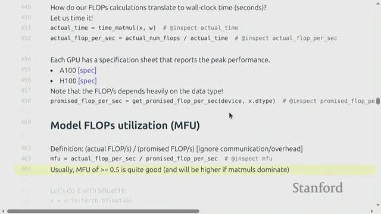
Measuring the actual time taken for matrix multiplication on GPUs is crucial for understanding how efficiently your code runs compared to the hardware's theoretical capabilities. This is where Model Flop Utilization (MFU) comes into play.
MFU is defined as the ratio of the actual useful floating point operations performed per second to the peak theoretical FLOPS of the hardware. In simpler terms, it tells you how well your model utilizes the GPU's computational power.
By understanding and applying MFU, you can better optimize your GPU workloads and achieve more efficient model training and inference.
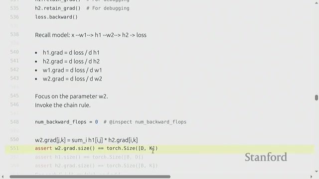
Training a linear model involves not only the forward pass—where predictions are made—but also the backward pass, which computes the gradients necessary to update the model parameters. This section breaks down the computational cost associated with these steps, focusing on the number of floating point operations (flops) involved.
For a simple linear model, the number of flops required can be summarized as follows:
Why does the backward pass require more computation? Because calculating gradients involves matrix multiplications similar to those in the forward pass, but with additional operations due to the chain rule.
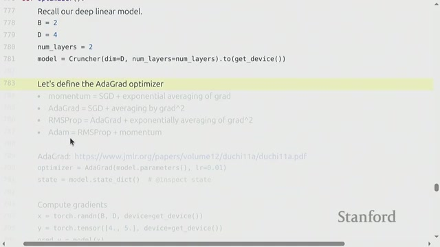
Training deep learning models demands careful management of memory resources. The total memory required during training is composed of several key components, each playing a crucial role in the process:
The total memory needed for training can be summarized as:
Memory for training = memory for parameters + activations + gradients + optimizer states
Understanding and managing these components effectively can lead to more efficient training and better utilization of hardware resources.
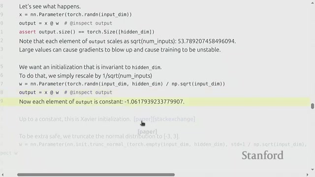
Creating robust models in PyTorch requires careful attention to how parameters are initialized. Good parameter initialization is crucial because poor initialization can cause output values to explode, leading to unstable training and suboptimal model performance.
When parameters start with values that are too large, the outputs of the model can become unstable. This instability makes it difficult for the training process to converge and can severely impact the learning capability of deep neural networks.
1 / sqrt(input dimension) helps keep output values stable.Xavier Initialization is a popular technique used to initialize weights in deep learning models. It works by scaling the weights so that the variance of the outputs remains stable across layers. Specifically, weights are typically divided by the square root of the input size, ensuring that signals neither vanish nor explode as they propagate through the network.
By applying these principles, practitioners can build PyTorch models that train more reliably and achieve better performance.
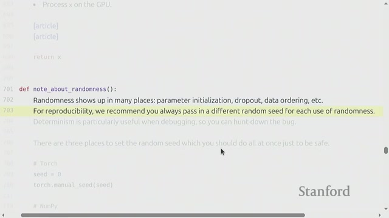
Model training involves several sources of randomness that can impact the behavior and results of your experiments. These include different initializations, data shuffling, and techniques like dropout. Such randomness can make it challenging to reproduce results consistently.
A random seed is a fixed starting point for random number generation. By setting random seeds for each source of randomness, you can ensure that your experiments produce reproducible results. This practice not only helps in verifying outcomes but also makes debugging much easier.
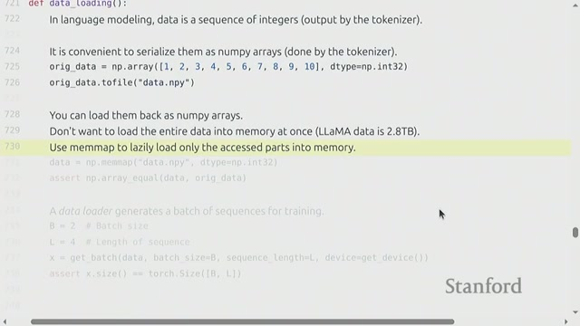
When working with large language model datasets, data is typically stored as long sequences of token IDs. To manage these massive datasets—often reaching terabytes in size—it's crucial to use efficient storage and loading techniques.
Memmap, or memory mapping, is a technique that maps data files directly to memory. This allows parts of the file to be loaded on demand, without reading the entire dataset into RAM.
By leveraging memory-mapped files, researchers and engineers can work with terabyte-scale datasets seamlessly, ensuring smooth and efficient training workflows.
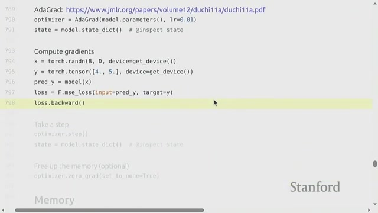
In machine learning, optimizers are crucial algorithms that update model parameters to minimize the loss function based on computed gradients. This section reviews several popular optimizers, including:
Modern optimizers often maintain internal state variables such as running averages of gradients or squared gradients. These states help adjust the learning steps dynamically and improve convergence. Important points include:
As an example, the Adagrad optimizer implementation demonstrates how optimizer states are stored and updated during training. This example serves as a foundation for understanding more complex optimizers like Adam, which you will implement as part of your homework.
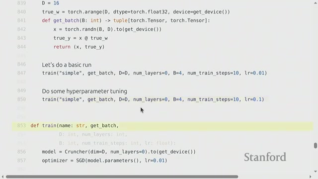
The training loop is a fundamental concept in machine learning that involves repeatedly performing a series of steps to optimize a model's parameters. These steps include:
By iterating through this loop, the model gradually improves its performance on the task at hand.
Training complex models can be a lengthy process, often taking hours or even days. During this time, unexpected interruptions such as system crashes or power failures can cause loss of progress. This is where checkpointing becomes crucial.
Checkpointing refers to the practice of periodically saving the current state of training to disk. This includes:
By saving these components together, you can resume training exactly where you left off without starting over.
In summary, mastering the training loop and implementing effective checkpointing strategies are essential for efficient and reliable machine learning training workflows.
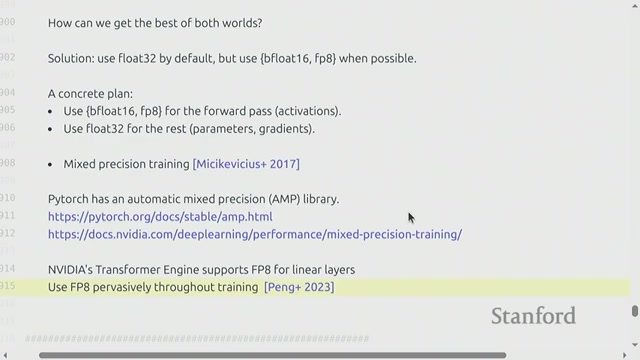
Choosing the right numerical precision during model training involves important trade-offs. Using higher precision formats like float32 offers greater numerical stability, but at the cost of slower computation and increased memory usage. On the other hand, lower precision formats such as BF16 or FP8 accelerate training and reduce memory footprint, but can introduce instability.
Mixed Precision Training cleverly combines different data types at various stages of training to achieve faster and more efficient training without significantly sacrificing accuracy. Typically, training computations are performed in higher precision to maintain stability, while other operations leverage lower precision for speed.
In essence, mixed precision training strikes a balance between speed and stability by leveraging multiple numerical formats. While training benefits from higher precision to maintain accuracy, inference can utilize aggressive quantization to maximize efficiency. Embracing these techniques is essential for modern deep learning workflows optimized for cutting-edge hardware.
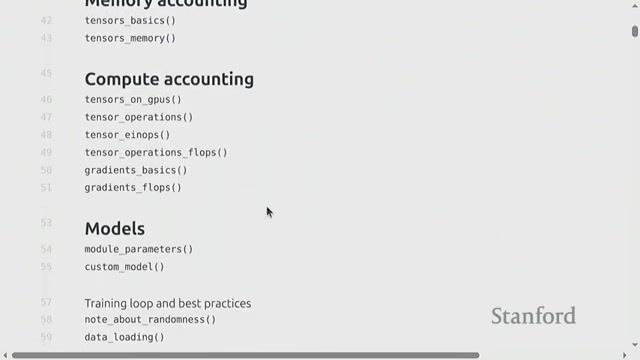
In this class, we wrapped up the fundamentals of PyTorch, covering everything from tensors to training loops, as well as memory and FLOP accounting for simple models. The instructor encourages students to solidify these concepts by applying them to transformers in Assignment One.
Generated automatically from lecture transcript and video analysis.